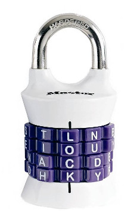

[inpsired by http://www.datagenetics.com/blog/march32012/]
Consider a combination lock that uses letters rather than numbers. For example, the Masterlock 1535DWD Vertical combination lock:

It has 4 rings with 10 letters each:
RINGS = ['BDMJPRSTLN', 'AEIOUYRTLH', 'ACDEORSTLN', 'DHKYRSTLNE']
In principle, just like the space of 4-digit base-10 numbers, there are 10,000 possible combinations. But in practice, there are far fewer.
1. How many English words can be made with this lock?
The answer will depend on what dictionary you use. On a Mac, this will get you English words as a Python list of uppercase strings:
words = open('/usr/share/dict/words','r').read().upper().split('\n')
Now let's say that you're trying to crack this lock, and here is what you know about the correct combination:
2. What is the correct combination for this lock?
Bonus question:
3. How many twin words and triplet words are there? What about higher levels of word multiples?
Open questions:
4. Change the letters of this lock (again with 4 rings with a set of 10 unique letters on each) to find the lock with the most multiple words of the highest order. How high can we go with English? Quadruplet words? Quintuplets? Sextuplets? Septuplets... octuplets??
5. And finally, how about siamese twin words, i.e. words that are adjacent to each other on the rings? What is the highest order of 4-letter siamese twin words that can be generated in English with 10-letter rings? What if it were a lock with full 26-letter alphabetic rings? (This last question is really more of a question about the English language than about combination locks.)